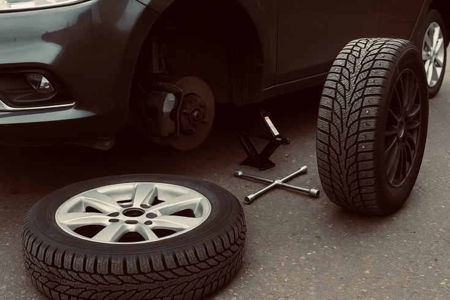
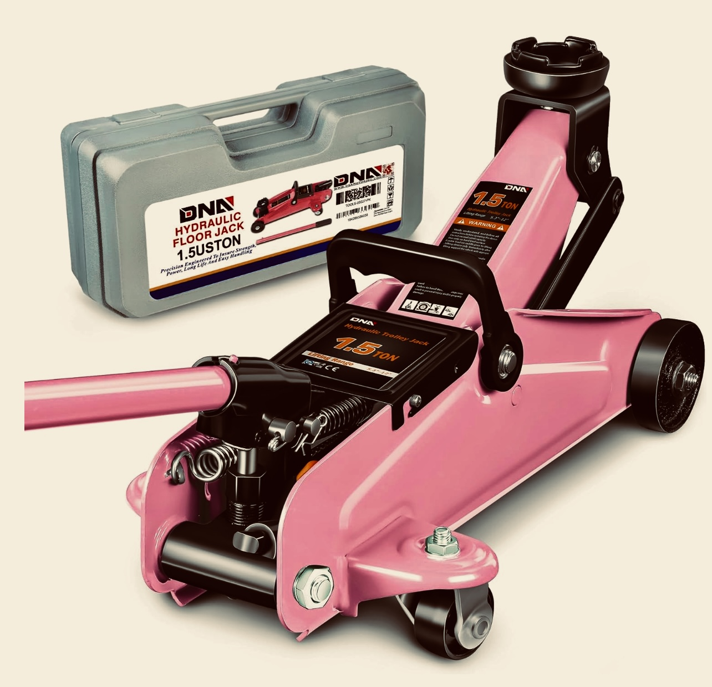
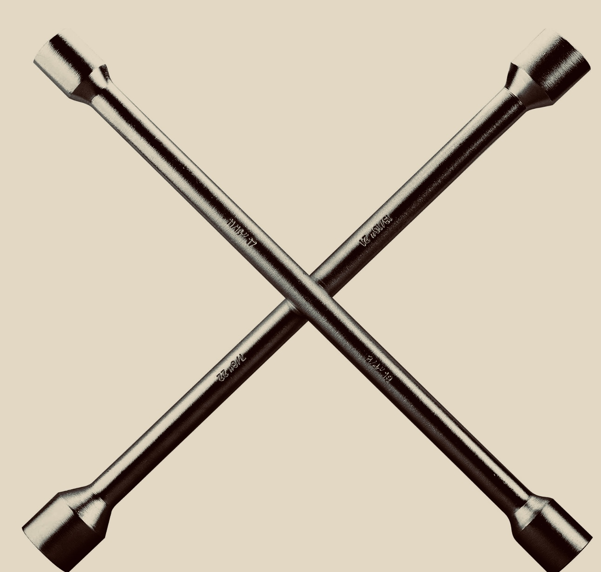

Knowing how to change a flat tire is an essential driving skill. Flat tires can happen anywhere,
and being prepared can save you time, money, and stress. With the right tools and a few simple steps,
you can safely replace a flat tire and get back on the road quickly.
First things first, find a safe haven. Look for flat, firm ground away from traffic. Avoid soft dirt, grassy areas, or blind spots. Once parked, engage the parking brake and turn on your hazard lights so other drivers know you're there.
Make sure you have the essentials:


Your owner's manual is also helpful because it contains instructions specific to your vehicle.
Before lifting the car, loosen the lug nuts slightly using your lug wrench. Do not remove them yet.
Place the jack correctly and raise the car until the tire is off the ground.
Remove the nuts and pull the tire straight off.
Align the spare tire and place it onto the wheel studs.
Lower the car and remove the jack.
Tighten fully in a crisscross pattern.
Store your tools and check your tire pressure.